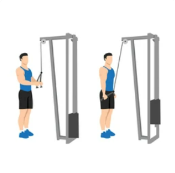

Triceps
Treniranje tricepsa je ključnega pomena za celovit in uravnotežen trening ter doseganje močnih, definiranih rok. Triceps je mišična skupina na hrbtni strani nadlakti, ki je odgovorna za iztegovanje komolca. Treniranje tricepsa prinaša številne koristi, tako estetske kot funkcionalne.
- Močni tricepsi omogočajo izboljšanje vsakodnevnih aktivnosti, kot so potiskanje, dviganje predmetov in izvajanje funkcionalnih gibanj. Prav tako prispevajo k stabilnosti ramenskega obroča in zmanjšujejo tveganje za poškodbe v tej regiji. Poleg tega treniranje tricepsa povečuje skupno moč zgornjega dela telesa in vpliva na izboljšanje atletske zmogljivosti.

- Estetsko gledano, dobro razviti tricepsi pripomorejo k definiciji in oblikovanju rok ter poudarijo mišični tonus. To lahko vpliva na boljši videz in samozavest. Prav tako, pri vadbi celotnega telesa, uravnotežen razvoj mišic prispeva k estetskemu in simetričnemu izgledu
Torej, če želite doseči močne, definirane roke in izboljšati funkcionalnost zgornjega dela telesa, je treniranje tricepsa ključnega pomena. Vključite vaje za tricepse v svoj trening program in opazili boste koristi tako v videzu kot tudi v funkcionalnosti.
Potisk s klopi s tesnim oprijemom(Close-Grip Bench Press)
Srednji del tricepsa
Lezite na klop s širšim oprijemom rok, ki je nekoliko manjši od širine ramen. Spustite palico do prsnega koša in nato potisnite nazaj navzgor, dokler se roke ne iztegnejo. Osredotočite se na napetost v tricepsu. Počasi spustite palico nazaj na prsni koš in ponovite.
Dipsi za tricepse(Tricep Dips)
Vse glave tricepsa
Postavite se med dve vzporedni palici, z rokami na palicah in stopali rahlo naprej. Spustite se navzdol, da se komolci ukrivijo pod pravim kotom, nato se potisnite nazaj navzgor, dokler se roke ne iztegnejo. Osredotočite se na napetost v tricepsu med potiskanjem. Počasi spustite nazaj navzdol in ponovite.
Potiskanje z ročko na kablu(Tricep Pushdowns)
Vse glave tricepsa

Postavite se pred kabelsko napravo s palico ali ročko v roki. Dvignite roko, da je na višini ramen, nato počasi potisnite roko navzdol, da se roka iztegne. Osredotočite se na napetost v tricepsu med potiskanjem. Počasi spustite roko nazaj navzgor in ponovite.
Izteg nad glavo za tricepse(Overhead Tricep Extension)
Srednji in zadnji del tricepsa
Stojte ali sedite s hrbtom vzravnano. Držite utež ali ročko nad glavo, nato počasi upognite komolec, da spustite utež za glavo. Nato iztegnite komolec, da dvignete utež nazaj v začetni položaj nad glavo. Osredotočite se na napetost v tricepsu med iztegovanjem. Počasi ponovite.
Potiski nad glavo(Skullcrushers)
Srednji in zadnji del tricepsa
Lezite na ravno klop z utežmi v rokah, ki so iztegnjene nad glavo. Začnite s komolci, upognjenimi pod pravim kotom, tako da so uteži usmerjene proti stropu. Počasi spustite uteži za glavo, tako da se komolci upognejo, in nadaljujte, dokler roke niso vzporedne s tlemi. Nato iztegnite komolce in dvignite uteži nazaj v začetni položaj nad glavo. Osredotočite se na napetost v tricepsu med gibanjem. Počasi ponovite.
Pri začetku novega vadbenega programa je vedno priporočljivo, da se posvetujete s strokovnjakom ali osebnim trenerjem, ki vam bo pomagal prilagoditi vadbo vašim individualnim potrebam in ciljem!
 Močno Telo
Močno Telo